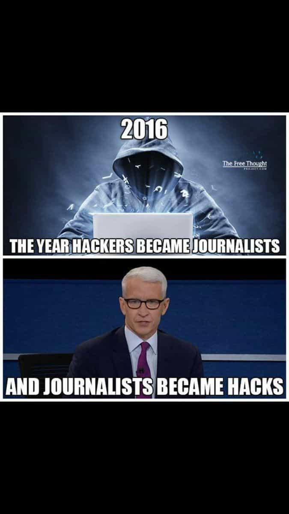

Libertas is a young bard traveling along the endless road to self-improvement and recounting his adventures. You can follow him on Twitter.


It’s now been over a week since the most glorious victory ever recorded in the war against rapacious globalism and lunatic Cultural Marxism—the election of Donald Trump to the Presidency of the United States. Like many of you, I was outside with my fellow tribesmen (the same tribe our opponents tried to shut down in February) until about 4 A.M. on Election Day. As you may expect, it was a joyous occasion that I’ll never forget.
Yet, as I remarked at the time, while this was a glorious victory, a decisive one that ended the campaign, the war would continue. I had hoped to be as magnanimous as possible in victory, to finally bridge some divides and begin to move past the insanity we’ve been dealing with that’s accelerated in the past few years. However, as has quickly become apparent, the Cultural Marxists, SJW’s, and their globalist overlords have no intention of coming to terms or engaging in meaningful self-reflection anytime soon. Instead, they’re doubling down on everything that voters resoundingly rejected on November 8th.
Predictably, there have been “protests” and some riots. Incidents of violence on the left have taken place and gone underreported. Just as predictably, most of these “protests” are professionally organized, with George Soros likely pulling at least a few of the strings. Learning nothing, the regressive leftists taking to the streets, complete with their Year Zero pathology, think themselves morally justified in blocking streets and attacking people, because they’re on a mission to purify society. Anything that stands in the way of that mission can be justly eliminated.
I came across one of these “protests” a few days ago. It was generic and small, basic bitch shit, really. But recall that these are merely the peons in the army of their overlords. Their intensity will dissipate with time. The safety-pin wearing, safe-space occupying, neon-haired freaks aren’t the ones to take note of on the grand strategic map. The bigger picture to focus on is the drive toward increased censorship in the past few days.
The recent counteroffensive began with the uproar over Donald Trump’s selection of Steve Bannon to be his chief White House strategist. The media and its acolytes on social media went into another coordinated attack, lambasting Bannon and Breitbart, which he ran, as having connections to the “alt-right,” which in turn, they say, is “associated with white nationalism.” To reinforce this pairing, the media ran with a couple of the most controversial Breitbart headlines.
If you recognize this tactic, it’s because the media A/B tested this against Roosh in February. They took the “How to Stop Rape” headline, said that it proved that Roosh was “pro-rape,” and then repeated endlessly.
This is actually a sort of hypnosis trick and was certainly done deliberately. Scott Adams calls this word-thinking:
Rational People: Use data and reason to arrive at truth. (This group is mostly imaginary.)
Word-Thinkers: Use labels, word definitions, and analogies to create the illusion of rational thinking. This group is 99% of the world.
Persuaders: Use simplicity, repetition, emotion, habit, aspirations, visual communication, and other tools of persuasion to program other people and themselves. This group is about 1% of the population and effectively control the word-thinkers of the world.
He further describes the phenomenon of word-thinking:
Word-thinking is important to persuasion because if you can convince someone to accept a label on an opponent, it turns off their critical thought and turns on their confirmation bias. Nuance is lost. Context is lost. All that matters once the label is accepted is whatever qualities the label already contained.
And this is what the media is doing. They did it with Roosh and are now doing their damndest to do it to Bannon, no doubt as one of the thousand paper cuts they hope to use to take President Trump down.
Because the term “alt-right” is relatively fresh, it’s vulnerable to being defined with the most ominous, dark terms possible, which is why the media is trying furiously to create as much connective tissue between it and “white nationalism” as possible. Remember, with word-thinking, nuance and context are lost.
And now that this first step has been achieved where it was meant to, the self-anointed moral cover for the more alarming stage of the counteroffensive is underway. Now that the ambiguous and ominous-sounding “alt-right” has been attempted to be extensively defined, the solution is obviously to crack down on it and anyone having to do with it (even if they really don’t). Given this pretext, the purges and censorship have begun, with numerous prominent Twitter accounts being suspended. Agree with these accounts or not (I often don’t), it should give you pause that this kind of blanket censorship is being implemented. If you’re just a little bit politically unorthodox, you’re now at heightened risk of being slapped with the “alt-right” label (even if you’re on record as not identifying with it) and banned from outlets of communication that are both vital for pushing your ideas forward and for promoting any business you have.
But banning individuals is only stage one. Stage two is the recent drive by Google, Facebook, Twitter, and others to censor what they call “fake news.” The media has been on a blitz against these “fake news” articles, completely unironically given that this is the same crowd that uncritically signal boosted the Rolling Stone rape hoax to the ends of the world, “fact checks” Donald Trump’s comment that Hillary Clinton “acid washed” her private email server, selectively edits clips to promote the narrative that their pets in “Black Lives Matter” are entirely peaceful when they aren’t, and fails to disclose contacts and relationships with officials of the Democratic National Committee while writing about the campaign.
No, this is not the Onion.
While this drive deserves to be a subject of laughter, we must nevertheless still take it seriously. There have already been reports of shadow bans on Twitter with prominent figures such as Mike Cernovich and Scott Adams, and it’s far from out of the question that a blacklist of sorts gets put up for outlets such as Return Of Kings, which were crucial in taking control of the narrative during the campaign. All the while, the media continues to nitpick, inflate, and manufacture anything they can turn into a controversy about the incoming Trump administration. Narrative warfare is far from over.
Fortunately, we have a master persuader in Donald Trump to lead the way, but we at the grassroots, the grunts in the trenches, if you will, must continue our efforts.
First, we need to begin to de-hypnotize those that can be. Scott Adams had some thoughts on that, but here are the crucial points:
1. The basis of the hypnosis in recent days has been around pairing the terms “alt-right” and “fake news” with all sorts of bad things.
2. Take away that pairing and you’ve made significant inroads.
I’ve A/B tested this sort of thing numerous times. Remember Mike Cernovich’s maxim that “conflict is attention and attention is influence.” Here are a few pointers.
1. Just like with women, frame control is paramount. The inevitable tactic that they’ll try to use is to associate anyone opposed to them with the worst elements of their “side.” Fortunately, our opponents have arguably worse elements given their blanket of moral superiority and cultural influence. Refocus the frame on those. Make them own their own worst elements.
2. Appeal to vanity. Most people like to think of themselves as “rational.” Tell them that their word-thinking is literally shutting down their critical thinking skills. I did this with a girl after the first debate, explaining to her that because “the movie in her head pictured a ‘Mexican’ in a certain way,” her critical thinking skills turned off, and that what Trump said about “the Mexican judge” would be equally applicable to someone of another heritage like “German.” It’s a long story, but her face was a picture. Tell them that they’re seeing things not based on reality, but on the movies playing in their heads, triggered by a certain word. Then watch the cognitive dissonance come.
On the broader level, here’s what we can do:
1. Continue on as usual. Continue to make a cultural impact. Get those websites, books, movies, and so on out there. Echoing what one member of the forum said: “politics is air cover, culture is the ground war.” They can try to censor “fake news” all they want, but we are too numerous to control if we don’t cooperate. It’s now time to redouble our efforts.
2. Don’t talk to any aggrieved victimhood class on social media if they’re acting hostile to you. They’ll use any excuse to ban you. Law 36: Disdain Things You Cannot Have, Ignoring them is the Best Revenge.
3. Begin to build new networks. Gab is up and coming and is far more free speech friendly.
4. I will echo what many others have said on the forum. MAKE FUN OF THEM. They’re a prime target for humor. Believe me when I say most people are sick of the special snowflakes on the street as well as the media.

This is a time of great opportunity, but we need to readjust for the new moves our opponents are making. They’re doing everything they can to censor us and de-legitimize Trump. That’s the next focus of the campaign. We must de-legitimize them in turn.
But take heart that we’re now in the ascendant. Otherwise they wouldn’t be making these moves. I recall when I first visited Return Of Kings and the forum nearly four years ago, there was a general malaise in the atmosphere. Day after day, it seemed, we were suffering another defeat. No longer.
What a ride it’s been.
Read Next: 3 Reasons Why You Should Apply For A Job In The Trump Administration